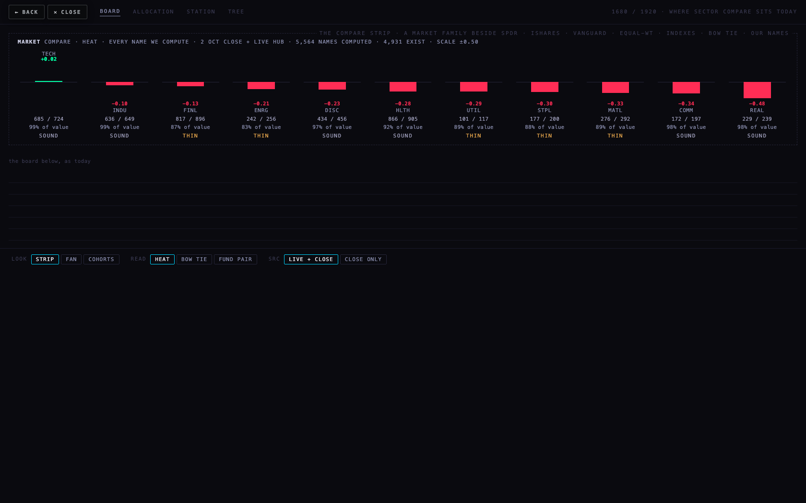
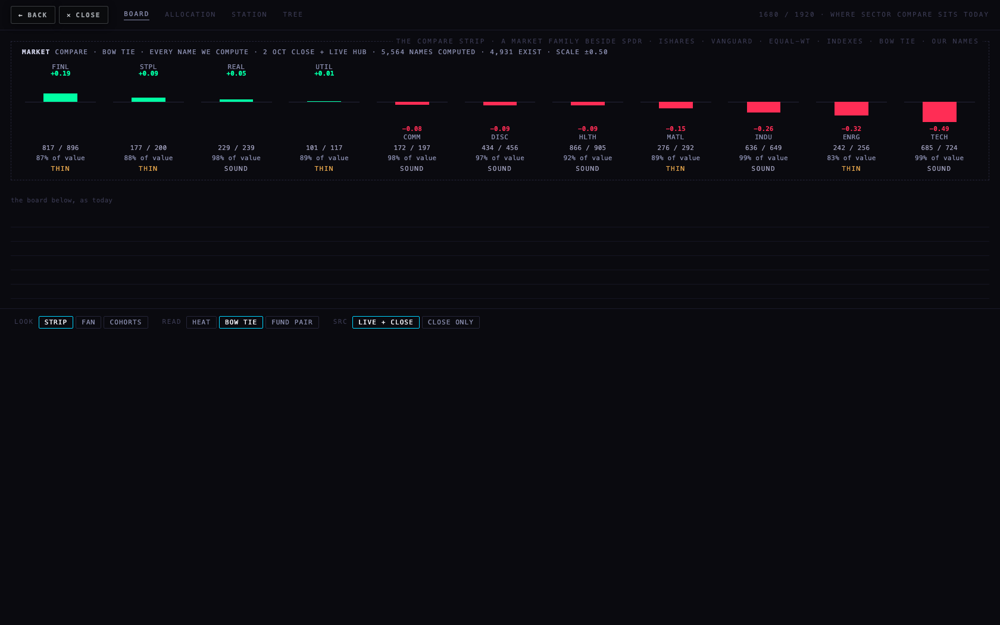
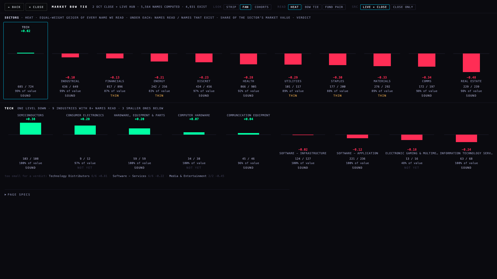
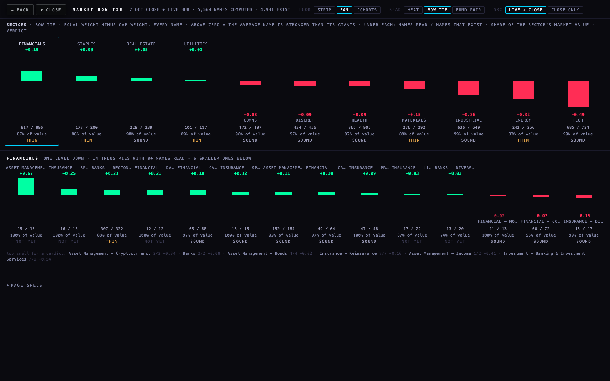
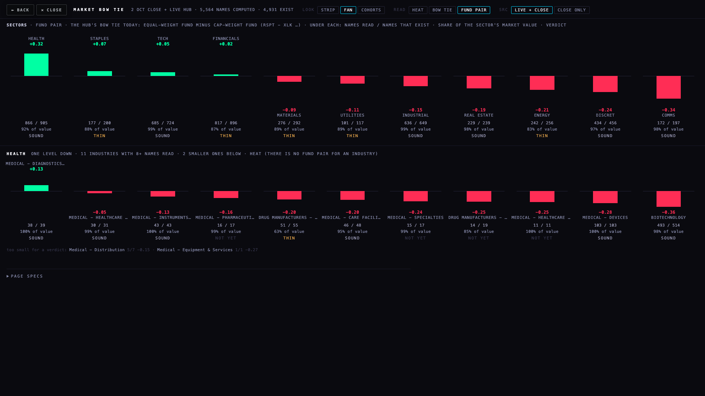
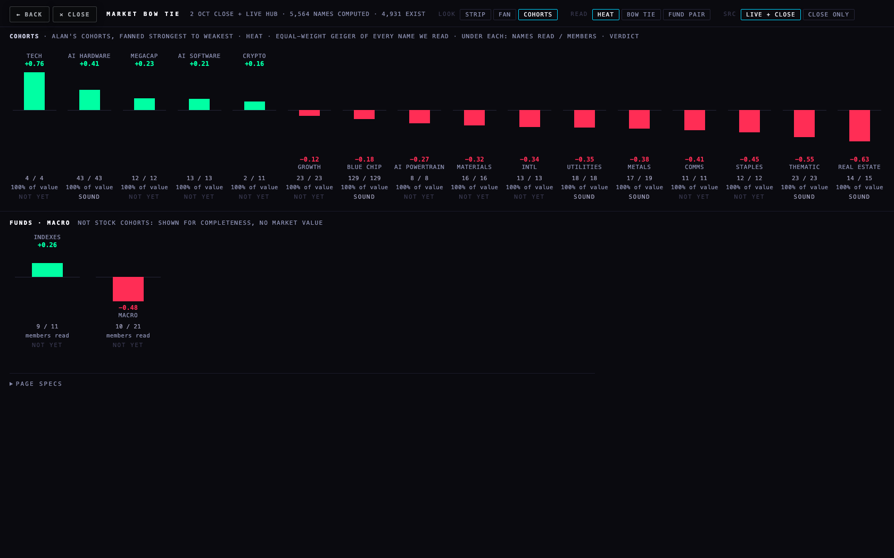
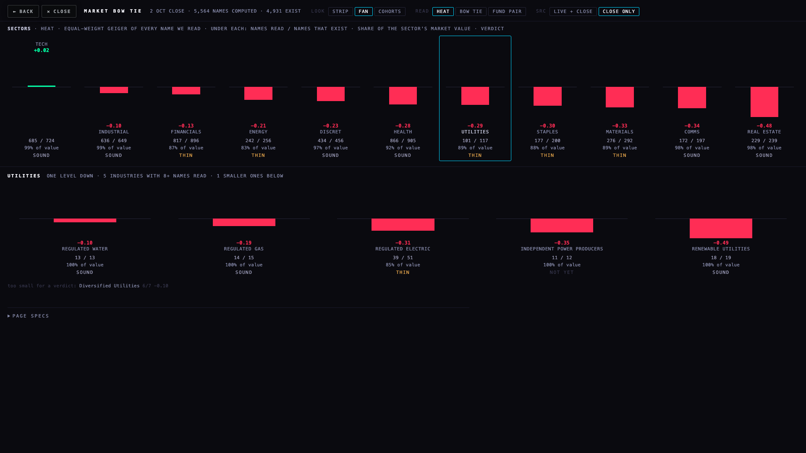

B1 · the market bow tie
a proposal on a branch · nothing on the live Hub · 3 Oct 2026Alan asked for the bow tie of the whole market, at the sector and cohort level, "just to see some heat", and how far we are from aggregates that are statistically sound. This page answers both with real data: every instrument we compute a Geiger for (5,564 names: the 590 the Hub reads live plus the 2 Oct close of every other listed name) against every common stock that exists (4,931). The working page is index.html beside this one.
The pictures







What the market says today (2 Oct close, the Hub live for its 590)
Read strongest to weakest on the equal-weight reading: TECH +0.02, INDUSTRIAL −0.10, FINANCIALS −0.13, ENERGY −0.21, DISCRET −0.23, HEALTH −0.28, UTILITIES −0.29, STAPLES −0.30, MATERIALS −0.33, COMMS −0.34, REAL ESTATE −0.48. The whole market averages −0.19 equal-weight and +0.07 cap-weight: the giants are carrying it, by −0.26. The widest gap is TECH: its average name reads +0.02 while the same names weighted by market value read +0.51: the giants are up, the average tech name is flat.
Is each sector statistically sound?
The rule is T12's (3 Oct), so the cohort lane and this one agree: 8 or more names read · standard error at or under 0.10 · held on each of the six closes 25 Sep to 2 Oct. B1 adds one neighbour and tests them together: the names read must carry at least 90 % of the market value of the names that exist, else the aggregate is THIN. Every sector passes count, agreement and steadiness; the five THIN ones are thin only on coverage, and each is one or two foreign listings away from SOUND.
| sector | equal-wt | cap-wt | bow tie | read / exist | live | value covered | std error | closes held | verdict | why not sound |
|---|---|---|---|---|---|---|---|---|---|---|
| TECH | +0.02 | +0.51 | −0.49 | 685 / 724 | 119 | 99% | 0.02 | 6 / 6 · swing 0.075 | SOUND | — |
| INDUSTRIAL | −0.10 | +0.16 | −0.26 | 636 / 649 | 65 | 99% | 0.019 | 6 / 6 · swing 0.084 | SOUND | — |
| FINANCIALS | −0.13 | −0.32 | +0.19 | 817 / 896 | 110 | 87% | 0.015 | 6 / 6 · swing 0.099 | THIN | covers 87% of the market value that exists (needs 90%) |
| ENERGY | −0.21 | +0.11 | −0.32 | 242 / 256 | 25 | 83% | 0.027 | 6 / 6 · swing 0.085 | THIN | covers 83% of the market value that exists (needs 90%) |
| DISCRET | −0.23 | −0.14 | −0.09 | 434 / 456 | 34 | 97% | 0.023 | 6 / 6 · swing 0.042 | SOUND | — |
| HEALTH | −0.28 | −0.19 | −0.09 | 866 / 905 | 45 | 92% | 0.015 | 6 / 6 · swing 0.075 | SOUND | — |
| UTILITIES | −0.29 | −0.30 | +0.01 | 101 / 117 | 29 | 89% | 0.035 | 6 / 6 · swing 0.127 | THIN | covers 89% of the market value that exists (needs 90%) |
| STAPLES | −0.30 | −0.39 | +0.09 | 177 / 200 | 19 | 88% | 0.03 | 6 / 6 · swing 0.04 | THIN | covers 88% of the market value that exists (needs 90%) |
| MATERIALS | −0.33 | −0.18 | −0.15 | 276 / 292 | 34 | 89% | 0.024 | 6 / 6 · swing 0.113 | THIN | covers 89% of the market value that exists (needs 90%) |
| COMMS | −0.34 | −0.27 | −0.08 | 172 / 197 | 22 | 98% | 0.032 | 6 / 6 · swing 0.045 | SOUND | — |
| REAL ESTATE | −0.48 | −0.53 | +0.05 | 229 / 239 | 16 | 98% | 0.027 | 6 / 6 · swing 0.031 | SOUND | — |
The names that would make the thin sectors sound
All 7 are large foreign companies listed in New York as ADRs. The close job reads Massive's common-stock type, which does not include them, so they have no close Geiger today. None needs the live Hub: the close tier is enough for a sector aggregate.
| sector | value covered | names (biggest first) | tier needed | why missing |
|---|---|---|---|---|
| FINANCIALS | 87% → ≥ 90% | HSBC (HSBC Holdings plc, $330.4 bn), MUFG (Mitsubishi UFJ Financial Group, Inc., $257.3 bn) | close tier | foreign listing (ADR): not in the Massive common-stock type the close job reads |
| ENERGY | 83% → ≥ 90% | SHEL (Shell plc, $268.3 bn), PBR (Petróleo Brasileiro S.A. - Petrobras, $139.5 bn) | close tier | foreign listing (ADR): not in the Massive common-stock type the close job reads |
| UTILITIES | 89% → ≥ 90% | NGG (National Grid plc, $76.5 bn) | close tier | foreign listing (ADR): not in the Massive common-stock type the close job reads |
| STAPLES | 88% → ≥ 90% | BUD (Anheuser-Busch InBev SA/NV, $144.6 bn) | close tier | foreign listing (ADR): not in the Massive common-stock type the close job reads |
| MATERIALS | 89% → ≥ 90% | BHP (BHP Group Limited, $218.6 bn) | close tier | foreign listing (ADR): not in the Massive common-stock type the close job reads |
One level down: industries
121 FMP industries have 8 or more names read. 55 are sound, 14 thin, 52 not yet; 32 more are too small for a verdict and are listed on the working page under their sector. The not-yet industries fail on disagreement, not on count: their names pull in different directions, so one average misleads (the reason the Hub never shows a cohort of fewer than eight names, and the reason the fan opens one sector at a time).
| sector | industry | equal-wt | bow tie | read / exist | value covered | std error | closes held | verdict | why not sound |
|---|---|---|---|---|---|---|---|---|---|
| TECH | Semiconductors | +0.38 | −0.26 | 103 / 108 | 100% | 0.041 | 6 / 6 | SOUND | — |
| TECH | Consumer Electronics | +0.28 | +0.01 | 9 / 12 | 97% | 0.144 | 0 / 6 | NOT YET | the names disagree: standard error 0.14 (limit 0.10) · held on 0 of 6 closes |
| TECH | Hardware, Equipment & Parts | +0.20 | −0.36 | 59 / 59 | 100% | 0.06 | 6 / 6 | SOUND | — |
| TECH | Computer Hardware | +0.07 | −0.32 | 34 / 38 | 100% | 0.102 | 3 / 6 | NOT YET | the names disagree: standard error 0.10 (limit 0.10) · held on 3 of 6 closes |
| TECH | Communication Equipment | +0.04 | −0.34 | 45 / 46 | 96% | 0.076 | 6 / 6 | SOUND | — |
| TECH | Software - Infrastructure | −0.02 | −0.62 | 124 / 127 | 100% | 0.048 | 6 / 6 | SOUND | — |
| TECH | Software - Application | −0.12 | −0.16 | 221 / 236 | 100% | 0.03 | 6 / 6 | SOUND | — |
| TECH | Electronic Gaming & Multimedia | −0.18 | +0.16 | 13 / 16 | 48% | 0.15 | 0 / 6 | NOT YET | the names disagree: standard error 0.15 (limit 0.10) · held on 0 of 6 closes · covers 48% of the market value that exists (needs 90%) |
| TECH | Information Technology Services | −0.24 | +0.00 | 63 / 68 | 100% | 0.054 | 6 / 6 | SOUND | — |
| INDUSTRIAL | Marine Shipping | +0.33 | −0.33 | 50 / 50 | 100% | 0.069 | 6 / 6 | SOUND | — |
| INDUSTRIAL | Manufacturing - Tools & Accessories | +0.20 | −0.04 | 9 / 9 | 100% | 0.116 | 0 / 6 | NOT YET | the names disagree: standard error 0.12 (limit 0.10) · held on 0 of 6 closes |
| INDUSTRIAL | Industrial - Distribution | +0.10 | −0.10 | 24 / 24 | 100% | 0.12 | 0 / 6 | NOT YET | the names disagree: standard error 0.12 (limit 0.10) · held on 0 of 6 closes |
| INDUSTRIAL | Agricultural - Machinery | +0.08 | −0.34 | 11 / 11 | 100% | 0.123 | 0 / 6 | NOT YET | the names disagree: standard error 0.12 (limit 0.10) · held on 0 of 6 closes |
| INDUSTRIAL | Manufacturing - Metal Fabrication | −0.03 | −0.20 | 15 / 16 | 98% | 0.104 | 5 / 6 | NOT YET | the names disagree: standard error 0.10 (limit 0.10) · held on 5 of 6 closes |
| INDUSTRIAL | Electrical Equipment & Parts | −0.04 | −0.46 | 55 / 56 | 100% | 0.071 | 6 / 6 | SOUND | — |
| INDUSTRIAL | Industrial - Machinery | −0.05 | −0.20 | 93 / 93 | 100% | 0.049 | 6 / 6 | SOUND | — |
| INDUSTRIAL | Rental & Leasing Services | −0.06 | −0.27 | 17 / 17 | 100% | 0.109 | 4 / 6 | NOT YET | the names disagree: standard error 0.11 (limit 0.10) · held on 4 of 6 closes |
| INDUSTRIAL | Trucking | −0.07 | −0.04 | 16 / 16 | 100% | 0.083 | 6 / 6 | SOUND | — |
| INDUSTRIAL | Integrated Freight & Logistics | −0.09 | +0.16 | 20 / 22 | 94% | 0.119 | 0 / 6 | NOT YET | the names disagree: standard error 0.12 (limit 0.10) · held on 0 of 6 closes |
| INDUSTRIAL | Engineering & Construction | −0.14 | −0.32 | 43 / 44 | 99% | 0.065 | 6 / 6 | SOUND | — |
| INDUSTRIAL | Conglomerates | −0.15 | +0.02 | 20 / 21 | 100% | 0.104 | 2 / 6 | NOT YET | the names disagree: standard error 0.10 (limit 0.10) · held on 2 of 6 closes |
| INDUSTRIAL | Specialty Business Services | −0.19 | +0.21 | 42 / 45 | 75% | 0.078 | 6 / 6 | THIN | covers 75% of the market value that exists (needs 90%) |
| INDUSTRIAL | Security & Protection Services | −0.20 | −0.17 | 17 / 17 | 100% | 0.115 | 0 / 6 | NOT YET | the names disagree: standard error 0.12 (limit 0.10) · held on 0 of 6 closes |
| INDUSTRIAL | Railroads | −0.20 | −0.20 | 10 / 10 | 100% | 0.106 | 1 / 6 | NOT YET | the names disagree: standard error 0.11 (limit 0.10) · held on 1 of 6 closes |
| INDUSTRIAL | Consulting Services | −0.21 | +0.28 | 18 / 18 | 100% | 0.1 | 0 / 6 | NOT YET | held on 0 of 6 closes |
| INDUSTRIAL | Staffing & Employment Services | −0.27 | +0.28 | 18 / 18 | 100% | 0.086 | 3 / 6 | NOT YET | held on 3 of 6 closes |
| INDUSTRIAL | Waste Management | −0.27 | +0.15 | 16 / 16 | 100% | 0.106 | 0 / 6 | NOT YET | the names disagree: standard error 0.11 (limit 0.10) · held on 0 of 6 closes |
| INDUSTRIAL | Airlines, Airports & Air Services | −0.30 | −0.26 | 24 / 27 | 98% | 0.082 | 6 / 6 | SOUND | — |
| INDUSTRIAL | Aerospace & Defense | −0.31 | −0.54 | 88 / 89 | 100% | 0.049 | 6 / 6 | SOUND | — |
| INDUSTRIAL | Industrial - Pollution & Treatment Controls | −0.37 | −0.05 | 13 / 13 | 100% | 0.087 | 1 / 6 | NOT YET | held on 1 of 6 closes |
| FINANCIALS | Financial - Conglomerates | +0.21 | −0.07 | 60 / 72 | 96% | 0.073 | 6 / 6 | SOUND | — |
| FINANCIALS | Banks - Regional | −0.01 | +0.21 | 307 / 322 | 68% | 0.019 | 6 / 6 | THIN | covers 68% of the market value that exists (needs 90%) |
| FINANCIALS | Asset Management - Global | −0.04 | +0.67 | 15 / 15 | 100% | 0.108 | 0 / 6 | NOT YET | the names disagree: standard error 0.11 (limit 0.10) · held on 0 of 6 closes |
| FINANCIALS | Insurance - Property & Casualty | −0.12 | +0.09 | 47 / 48 | 100% | 0.059 | 6 / 6 | SOUND | — |
| FINANCIALS | Financial - Capital Markets | −0.20 | +0.18 | 65 / 68 | 97% | 0.051 | 6 / 6 | SOUND | — |
| FINANCIALS | Asset Management | −0.26 | +0.11 | 152 / 164 | 92% | 0.037 | 6 / 6 | SOUND | — |
| FINANCIALS | Insurance - Diversified | −0.29 | −0.15 | 15 / 17 | 99% | 0.052 | 6 / 6 | SOUND | — |
| FINANCIALS | Insurance - Life | −0.30 | +0.03 | 17 / 22 | 87% | 0.078 | 5 / 6 | NOT YET | held on 5 of 6 closes · covers 87% of the market value that exists (needs 90%) |
| FINANCIALS | Financial - Data & Stock Exchanges | −0.32 | +0.21 | 12 / 12 | 100% | 0.13 | 0 / 6 | NOT YET | the names disagree: standard error 0.13 (limit 0.10) · held on 0 of 6 closes |
| FINANCIALS | Financial - Credit Services | −0.33 | +0.10 | 49 / 64 | 97% | 0.055 | 6 / 6 | SOUND | — |
| FINANCIALS | Insurance - Brokers | −0.33 | +0.25 | 16 / 18 | 100% | 0.12 | 0 / 6 | NOT YET | the names disagree: standard error 0.12 (limit 0.10) · held on 0 of 6 closes |
| FINANCIALS | Banks - Diversified | −0.36 | +0.03 | 13 / 20 | 74% | 0.039 | 4 / 6 | NOT YET | held on 4 of 6 closes · covers 74% of the market value that exists (needs 90%) |
| FINANCIALS | Insurance - Specialty | −0.38 | +0.12 | 15 / 15 | 100% | 0.076 | 6 / 6 | SOUND | — |
| FINANCIALS | Financial - Mortgages | −0.60 | −0.02 | 11 / 13 | 100% | 0.077 | 6 / 6 | SOUND | — |
| ENERGY | Oil & Gas Refining & Marketing | +0.24 | −0.47 | 16 / 17 | 98% | 0.152 | 0 / 6 | NOT YET | the names disagree: standard error 0.15 (limit 0.10) · held on 0 of 6 closes |
| ENERGY | Oil & Gas Integrated | −0.03 | −0.39 | 10 / 16 | 68% | 0.161 | 0 / 6 | NOT YET | the names disagree: standard error 0.16 (limit 0.10) · held on 0 of 6 closes · covers 68% of the market value that exists (needs 90%) |
| ENERGY | Oil & Gas Exploration & Production | −0.15 | −0.13 | 76 / 81 | 94% | 0.037 | 6 / 6 | SOUND | — |
| ENERGY | Oil & Gas Midstream | −0.18 | +0.06 | 40 / 42 | 97% | 0.06 | 6 / 6 | SOUND | — |
| ENERGY | Oil & Gas Equipment & Services | −0.26 | +0.03 | 49 / 49 | 100% | 0.061 | 6 / 6 | SOUND | — |
| ENERGY | Coal | −0.33 | −0.13 | 9 / 9 | 100% | 0.096 | 4 / 6 | NOT YET | held on 4 of 6 closes |
| ENERGY | Oil & Gas Drilling | −0.35 | +0.02 | 10 / 10 | 100% | 0.095 | 6 / 6 | SOUND | — |
| ENERGY | Solar | −0.46 | −0.18 | 18 / 18 | 100% | 0.081 | 6 / 6 | SOUND | — |
| ENERGY | Uranium | −0.62 | +0.03 | 13 / 13 | 100% | 0.04 | 6 / 6 | SOUND | — |
| DISCRET | Apparel - Footwear & Accessories | +0.16 | +0.52 | 16 / 16 | 100% | 0.134 | 0 / 6 | NOT YET | the names disagree: standard error 0.13 (limit 0.10) · held on 0 of 6 closes |
| DISCRET | Personal Products & Services | +0.00 | −0.00 | 8 / 8 | 100% | 0.165 | 0 / 6 | NOT YET | the names disagree: standard error 0.16 (limit 0.10) · held on 0 of 6 closes |
| DISCRET | Travel Services | −0.05 | +0.07 | 17 / 18 | 100% | 0.135 | 0 / 6 | NOT YET | the names disagree: standard error 0.14 (limit 0.10) · held on 0 of 6 closes |
| DISCRET | Furnishings, Fixtures & Appliances | −0.06 | −0.16 | 25 / 26 | 100% | 0.101 | 0 / 6 | NOT YET | the names disagree: standard error 0.10 (limit 0.10) · held on 0 of 6 closes |
| DISCRET | Apparel - Manufacturers | −0.07 | −0.08 | 17 / 17 | 100% | 0.114 | 0 / 6 | NOT YET | the names disagree: standard error 0.11 (limit 0.10) · held on 0 of 6 closes |
| DISCRET | Apparel - Retail | −0.10 | −0.07 | 30 / 30 | 100% | 0.099 | 6 / 6 | SOUND | — |
| DISCRET | Leisure | −0.16 | +0.02 | 28 / 29 | 100% | 0.077 | 6 / 6 | SOUND | — |
| DISCRET | Travel Lodging | −0.17 | −0.34 | 9 / 11 | 90% | 0.126 | 5 / 6 | NOT YET | the names disagree: standard error 0.13 (limit 0.10) · held on 5 of 6 closes · covers 90% of the market value that exists (needs 90%) |
| DISCRET | Restaurants | −0.24 | +0.31 | 50 / 50 | 100% | 0.069 | 6 / 6 | SOUND | — |
| DISCRET | Auto - Parts | −0.29 | −0.01 | 42 / 42 | 100% | 0.058 | 6 / 6 | SOUND | — |
| DISCRET | Specialty Retail | −0.30 | −0.17 | 65 / 73 | 100% | 0.054 | 6 / 6 | SOUND | — |
| DISCRET | Packaging & Containers | −0.30 | +0.11 | 18 / 18 | 100% | 0.101 | 3 / 6 | NOT YET | the names disagree: standard error 0.10 (limit 0.10) · held on 3 of 6 closes |
| DISCRET | Residential Construction | −0.32 | +0.17 | 20 / 20 | 100% | 0.11 | 5 / 6 | NOT YET | the names disagree: standard error 0.11 (limit 0.10) · held on 5 of 6 closes |
| DISCRET | Auto - Dealerships | −0.35 | −0.11 | 17 / 18 | 100% | 0.088 | 6 / 6 | SOUND | — |
| DISCRET | Auto - Recreational Vehicles | −0.39 | +0.10 | 10 / 10 | 100% | 0.099 | 2 / 6 | NOT YET | held on 2 of 6 closes |
| DISCRET | Auto - Manufacturers | −0.41 | −0.52 | 20 / 25 | 87% | 0.104 | 6 / 6 | THIN | the names disagree: standard error 0.10 (limit 0.10) · covers 87% of the market value that exists (needs 90%) |
| DISCRET | Gambling, Resorts & Casinos | −0.50 | +0.16 | 25 / 27 | 98% | 0.086 | 6 / 6 | SOUND | — |
| HEALTH | Medical - Diagnostics & Research | +0.13 | −0.05 | 38 / 39 | 100% | 0.067 | 6 / 6 | SOUND | — |
| HEALTH | Medical - Healthcare Information Services | −0.05 | −0.24 | 30 / 31 | 99% | 0.085 | 6 / 6 | SOUND | — |
| HEALTH | Medical - Instruments & Supplies | −0.13 | +0.03 | 43 / 43 | 100% | 0.061 | 6 / 6 | SOUND | — |
| HEALTH | Medical - Pharmaceuticals | −0.16 | −0.05 | 16 / 17 | 99% | 0.149 | 0 / 6 | NOT YET | the names disagree: standard error 0.15 (limit 0.10) · held on 0 of 6 closes |
| HEALTH | Drug Manufacturers - Specialty & Generic | −0.20 | −0.17 | 51 / 55 | 63% | 0.062 | 6 / 6 | THIN | covers 63% of the market value that exists (needs 90%) |
| HEALTH | Medical - Care Facilities | −0.20 | −0.20 | 46 / 48 | 95% | 0.065 | 6 / 6 | SOUND | — |
| HEALTH | Medical - Specialties | −0.24 | +0.32 | 15 / 17 | 99% | 0.123 | 0 / 6 | NOT YET | the names disagree: standard error 0.12 (limit 0.10) · held on 0 of 6 closes |
| HEALTH | Drug Manufacturers - General | −0.25 | +0.02 | 14 / 19 | 85% | 0.092 | 0 / 6 | NOT YET | held on 0 of 6 closes · covers 85% of the market value that exists (needs 90%) |
| HEALTH | Medical - Healthcare Plans | −0.25 | +0.08 | 11 / 11 | 100% | 0.081 | 4 / 6 | NOT YET | held on 4 of 6 closes |
| HEALTH | Medical - Devices | −0.28 | +0.19 | 103 / 103 | 100% | 0.046 | 6 / 6 | SOUND | — |
| HEALTH | Biotechnology | −0.36 | −0.19 | 493 / 514 | 98% | 0.019 | 6 / 6 | SOUND | — |
| UTILITIES | Regulated Water | −0.10 | −0.04 | 13 / 13 | 100% | 0.08 | 6 / 6 | SOUND | — |
| UTILITIES | Regulated Gas | −0.19 | +0.12 | 14 / 15 | 100% | 0.061 | 6 / 6 | SOUND | — |
| UTILITIES | Regulated Electric | −0.31 | +0.01 | 39 / 51 | 85% | 0.05 | 6 / 6 | THIN | covers 85% of the market value that exists (needs 90%) |
| UTILITIES | Independent Power Producers | −0.35 | −0.03 | 11 / 12 | 100% | 0.151 | 0 / 6 | NOT YET | the names disagree: standard error 0.15 (limit 0.10) · held on 0 of 6 closes |
| UTILITIES | Renewable Utilities | −0.49 | −0.07 | 18 / 19 | 100% | 0.073 | 6 / 6 | SOUND | — |
| STAPLES | Food Distribution | −0.03 | +0.09 | 9 / 9 | 100% | 0.126 | 0 / 6 | NOT YET | the names disagree: standard error 0.13 (limit 0.10) · held on 0 of 6 closes |
| STAPLES | Discount Stores | −0.06 | +0.35 | 9 / 9 | 100% | 0.167 | 0 / 6 | NOT YET | the names disagree: standard error 0.17 (limit 0.10) · held on 0 of 6 closes |
| STAPLES | Grocery Stores | −0.13 | +0.02 | 12 / 13 | 99% | 0.168 | 0 / 6 | NOT YET | the names disagree: standard error 0.17 (limit 0.10) · held on 0 of 6 closes |
| STAPLES | Education & Training Services | −0.23 | −0.34 | 21 / 32 | 76% | 0.091 | 6 / 6 | THIN | covers 76% of the market value that exists (needs 90%) |
| STAPLES | Household & Personal Products | −0.28 | +0.15 | 27 / 29 | 82% | 0.079 | 6 / 6 | THIN | covers 81% of the market value that exists (needs 90%) |
| STAPLES | Beverages - Non-Alcoholic | −0.37 | +0.11 | 17 / 18 | 97% | 0.084 | 2 / 6 | NOT YET | held on 2 of 6 closes |
| STAPLES | Agricultural Farm Products | −0.38 | −0.16 | 15 / 17 | 99% | 0.088 | 2 / 6 | NOT YET | held on 2 of 6 closes |
| STAPLES | Packaged Foods | −0.39 | +0.06 | 46 / 47 | 100% | 0.053 | 6 / 6 | SOUND | — |
| STAPLES | Tobacco | −0.39 | −0.13 | 8 / 9 | 78% | 0.124 | 0 / 6 | NOT YET | the names disagree: standard error 0.12 (limit 0.10) · held on 0 of 6 closes · covers 78% of the market value that exists (needs 90%) |
| MATERIALS | Copper | +0.32 | −0.14 | 8 / 8 | 100% | 0.094 | 0 / 6 | NOT YET | held on 0 of 6 closes |
| MATERIALS | Steel | −0.01 | +0.18 | 17 / 20 | 93% | 0.109 | 4 / 6 | NOT YET | the names disagree: standard error 0.11 (limit 0.10) · held on 4 of 6 closes |
| MATERIALS | Chemicals - Specialty | −0.14 | −0.04 | 55 / 55 | 100% | 0.056 | 6 / 6 | SOUND | — |
| MATERIALS | Chemicals | −0.35 | −0.05 | 13 / 15 | 85% | 0.079 | 6 / 6 | THIN | covers 85% of the market value that exists (needs 90%) |
| MATERIALS | Gold | −0.37 | −0.01 | 50 / 50 | 100% | 0.032 | 6 / 6 | SOUND | — |
| MATERIALS | Construction Materials | −0.41 | −0.23 | 35 / 37 | 99% | 0.068 | 6 / 6 | SOUND | — |
| MATERIALS | Paper, Lumber & Forest Products | −0.49 | +0.15 | 10 / 12 | 77% | 0.128 | 0 / 6 | NOT YET | the names disagree: standard error 0.13 (limit 0.10) · held on 0 of 6 closes · covers 77% of the market value that exists (needs 90%) |
| MATERIALS | Other Precious Metals | −0.50 | −0.04 | 29 / 33 | 66% | 0.052 | 6 / 6 | THIN | covers 66% of the market value that exists (needs 90%) |
| MATERIALS | Industrial Materials | −0.51 | −0.18 | 36 / 39 | 41% | 0.068 | 6 / 6 | THIN | covers 41% of the market value that exists (needs 90%) |
| MATERIALS | Agricultural Inputs | −0.58 | +0.05 | 12 / 12 | 100% | 0.087 | 5 / 6 | NOT YET | held on 5 of 6 closes |
| COMMS | Entertainment | −0.24 | +0.17 | 35 / 37 | 100% | 0.067 | 6 / 6 | SOUND | — |
| COMMS | Telecommunications Services | −0.29 | +0.19 | 37 / 51 | 82% | 0.082 | 6 / 6 | THIN | covers 82% of the market value that exists (needs 90%) |
| COMMS | Internet Content & Information | −0.34 | −0.10 | 50 / 57 | 100% | 0.054 | 6 / 6 | SOUND | — |
| COMMS | Advertising Agencies | −0.46 | −0.04 | 27 / 28 | 89% | 0.084 | 6 / 6 | THIN | covers 89% of the market value that exists (needs 90%) |
| COMMS | Broadcasting | −0.54 | +0.09 | 16 / 16 | 100% | 0.071 | 2 / 6 | NOT YET | held on 2 of 6 closes |
| REAL ESTATE | REIT - Hotel & Motel | +0.10 | −0.16 | 15 / 15 | 100% | 0.144 | 0 / 6 | NOT YET | the names disagree: standard error 0.14 (limit 0.10) · held on 0 of 6 closes |
| REAL ESTATE | Real Estate - Services | −0.36 | +0.12 | 30 / 31 | 85% | 0.067 | 6 / 6 | THIN | covers 85% of the market value that exists (needs 90%) |
| REAL ESTATE | REIT - Retail | −0.44 | +0.10 | 25 / 25 | 100% | 0.067 | 6 / 6 | SOUND | — |
| REAL ESTATE | REIT - Diversified | −0.44 | +0.27 | 19 / 21 | 95% | 0.081 | 6 / 6 | SOUND | — |
| REAL ESTATE | REIT - Industrial | −0.46 | +0.15 | 15 / 16 | 100% | 0.098 | 5 / 6 | NOT YET | held on 5 of 6 closes |
| REAL ESTATE | REIT - Office | −0.46 | +0.04 | 19 / 19 | 100% | 0.059 | 6 / 6 | SOUND | — |
| REAL ESTATE | Real Estate - Development | −0.49 | −0.29 | 14 / 17 | 82% | 0.091 | 6 / 6 | THIN | covers 82% of the market value that exists (needs 90%) |
| REAL ESTATE | REIT - Specialty | −0.50 | −0.04 | 19 / 19 | 100% | 0.106 | 5 / 6 | NOT YET | the names disagree: standard error 0.11 (limit 0.10) · held on 5 of 6 closes |
| REAL ESTATE | REIT - Healthcare Facilities | −0.51 | −0.00 | 17 / 18 | 100% | 0.093 | 6 / 6 | SOUND | — |
| REAL ESTATE | REIT - Residential | −0.67 | +0.10 | 19 / 19 | 100% | 0.075 | 6 / 6 | SOUND | — |
| REAL ESTATE | REIT - Mortgage | −0.79 | +0.08 | 37 / 38 | 99% | 0.033 | 6 / 6 | SOUND | — |
The thin industries and the names that would make them sound (biggest first, close tier):
| sector | industry | value covered | names | tier |
|---|---|---|---|---|
| INDUSTRIAL | Specialty Business Services | 75% → ≥ 90% | RELX $58.3 bn | close tier |
| FINANCIALS | Banks - Regional | 68% → ≥ 90% | MFG $132.7 bn, HDB $114.6 bn, IBN $98.1 bn, LYG $79.8 bn | close tier |
| DISCRET | Auto - Manufacturers | 87% → ≥ 90% | TM $214.9 bn | close tier |
| HEALTH | Drug Manufacturers - Specialty & Generic | 63% → ≥ 90% | TAK $56.8 bn, HLN $38.8 bn | close tier |
| UTILITIES | Regulated Electric | 85% → ≥ 90% | NGG $76.5 bn | close tier |
| STAPLES | Education & Training Services | 76% → ≥ 90% | EDU $8.8 bn | close tier |
| STAPLES | Household & Personal Products | 82% → ≥ 90% | UL $128.6 bn | close tier |
| MATERIALS | Chemicals | 85% → ≥ 90% | SSL $8.9 bn | close tier |
| MATERIALS | Other Precious Metals | 66% → ≥ 90% | RML $13.6 bn, SBSW $7.0 bn | close tier |
| MATERIALS | Industrial Materials | 41% → ≥ 90% | BHP $218.6 bn, VALE $58.7 bn | close tier |
| COMMS | Telecommunications Services | 82% → ≥ 90% | AMX $63.9 bn, VOD $38.7 bn | close tier |
| COMMS | Advertising Agencies | 89% → ≥ 90% | WPP $5.3 bn | close tier |
| REAL ESTATE | Real Estate - Services | 85% → ≥ 90% | BEKE $18.2 bn | close tier |
| REAL ESTATE | Real Estate - Development | 82% → ≥ 90% | VTMX $2.7 bn | close tier |
Alan's cohorts
Measured with the same rule, on the same closes, so the verdicts match T12's where the cohort is the same set. A cohort is its own definition, so coverage is the share of its members we read.
| cohort | equal-wt | bow tie | read / members | live | std error | closes held | verdict | why not sound |
|---|---|---|---|---|---|---|---|---|
| TECH | +0.76 | −0.07 | 4 / 4 | 4 | 0.082 | 0 / 6 · swing 0.175 | NOT YET | only 4 with a reading (needs 8) · held on 0 of 6 closes |
| AI HARDWARE | +0.41 | −0.19 | 43 / 43 | 43 | 0.066 | 6 / 6 · swing 0.091 | SOUND | — |
| INDEXES · funds / macro | +0.26 | — | 9 / 11 | 9 | 0.141 | 0 / 6 · swing 0.161 | NOT YET | the names disagree: standard error 0.14 (limit 0.10) · held on 0 of 6 closes |
| MEGACAP | +0.23 | −0.06 | 12 / 12 | 12 | 0.135 | 0 / 6 · swing 0.117 | NOT YET | the names disagree: standard error 0.13 (limit 0.10) · held on 0 of 6 closes |
| AI SOFTWARE | +0.21 | +0.04 | 13 / 13 | 13 | 0.156 | 0 / 6 · swing 0.119 | NOT YET | the names disagree: standard error 0.16 (limit 0.10) · held on 0 of 6 closes |
| CRYPTO | +0.16 | −0.01 | 2 / 11 | 2 | 0.321 | 0 / 6 · swing 0.084 | NOT YET | only 2 with a reading (needs 8) · the names disagree: standard error 0.32 (limit 0.10) · held on 0 of 6 closes |
| GROWTH | −0.12 | −0.04 | 23 / 23 | 23 | 0.107 | 1 / 6 · swing 0.093 | NOT YET | the names disagree: standard error 0.11 (limit 0.10) · held on 1 of 6 closes |
| BLUE CHIP | −0.18 | −0.01 | 129 / 129 | 128 | 0.04 | 6 / 6 · swing 0.075 | SOUND | — |
| AI POWERTRAIN | −0.27 | −0.43 | 8 / 8 | 8 | 0.185 | 0 / 6 · swing 0.054 | NOT YET | the names disagree: standard error 0.19 (limit 0.10) · held on 0 of 6 closes |
| MATERIALS | −0.32 | −0.33 | 16 / 16 | 16 | 0.098 | 3 / 6 · swing 0.111 | NOT YET | held on 3 of 6 closes |
| INTL | −0.34 | +0.44 | 13 / 13 | 13 | 0.152 | 0 / 6 · swing 0.086 | NOT YET | the names disagree: standard error 0.15 (limit 0.10) · held on 0 of 6 closes |
| UTILITIES | −0.35 | −0.02 | 18 / 18 | 18 | 0.028 | 6 / 6 · swing 0.14 | SOUND | — |
| METALS | −0.38 | −0.06 | 17 / 19 | 17 | 0.042 | 6 / 6 · swing 0.251 | SOUND | — |
| COMMS | −0.41 | +0.01 | 11 / 11 | 11 | 0.136 | 0 / 6 · swing 0.137 | NOT YET | the names disagree: standard error 0.14 (limit 0.10) · held on 0 of 6 closes |
| STAPLES | −0.45 | −0.09 | 12 / 12 | 12 | 0.084 | 5 / 6 · swing 0.21 | NOT YET | held on 5 of 6 closes |
| MACRO · funds / macro | −0.48 | — | 10 / 21 | 10 | 0.152 | 0 / 6 · swing 0.092 | NOT YET | the names disagree: standard error 0.15 (limit 0.10) · held on 0 of 6 closes |
| THEMATIC | −0.55 | −0.13 | 23 / 23 | 23 | 0.07 | 6 / 6 · swing 0.129 | SOUND | — |
| REAL ESTATE | −0.63 | −0.03 | 14 / 15 | 14 | 0.053 | 6 / 6 · swing 0.059 | SOUND | — |
Does today's bow tie still mean something at market scale?
Yes, but it is a different reading, and the page says so with a chip. Today's bow tie on the Hub is a fund pair: the equal-weight sector fund minus its cap-weight twin (RSPT − XLK). Both funds hold only the S&P 500's members of the sector, so the pair says whether the average large cap is stronger than the giants. The market bow tie takes every listed name in the sector (100 to 900) and asks whether the average name is stronger than the market value of the sector. Across the eleven sectors the two agree in sign 7 times out of 11 and correlate at 0.069: they do not measure the same thing. Keep the fund pair where it is (Alan likes it, and it is the S&P's breadth); add the market reading beside it under its own chip.
| group | fund pair | pair reads | market bow tie (every name) | sign |
|---|---|---|---|---|
| HEALTH | RSPH − XLV | +0.32 | −0.09 | disagree |
| STAPLES | RSPS − XLP | +0.07 | +0.09 | agree |
| TECH | RSPT − XLK | +0.05 | −0.49 | disagree |
| FINANCIALS | RSPF − XLF | +0.02 | +0.19 | agree |
| MATERIALS | RSPM − XLB | −0.09 | −0.15 | agree |
| UTILITIES | RSPU − XLU | −0.11 | +0.01 | disagree |
| NASDAQ-100 | QQQE − QQQ | −0.11 | — | — |
| INDUSTRIAL | RSPN − XLI | −0.15 | −0.26 | agree |
| REAL ESTATE | RSPR − XLRE | −0.19 | +0.05 | disagree |
| ENERGY | RSPG − XLE | −0.21 | −0.32 | agree |
| DISCRETIONARY | RSPD − XLY | −0.24 | −0.09 | agree |
| COMMS | RSPC − XLC | −0.34 | −0.08 | agree |
| S&P 500 | RSP − SPY | −0.80 | — | — |
| RUSSELL 1000 | EQAL − IWB | — | — | — |
One recommendation
Ship Look 1 first: a MARKET chip in the compare strip at the top of the dashboard, drawing the eleven sectors from every name we compute (the Hub live, the rest at the close), with names read / that exist, the share of value and the verdict under each column, and the three readings (HEAT, BOW TIE, FUND PAIR) as chips. It needs no new table and no new job: the strip reads the chart API's /v1/scout-geiger once a day beside the Hub's /geiger it already reads. Before it goes live, add the 7 ADRs (BHP, BUD, HSBC, MUFG, NGG, PBR, SHEL) to the close job's listing so the five thin sectors turn sound; that is a close-tier change, not a Hub admission. Look 2 (the industries fan) follows as a tab once Alan has seen the strip; Look 3 (cohorts) belongs in COHORT COMPARE with the verdict under each column.
Page specs
Sources, all read-only. Close Geiger: chart API /v1/scout-geiger, run scout-geiger-nightly-20261003T002101Z-0a6dbb, as of 2026-10-02, computed 2026-10-03T00:21:01.765Z (5,642 rows; the Hub's seven rungs and the live Equalizer receipt d0da9a466c8f…). Live Geiger: chart API /geiger, computed 2026-10-03T15:52:37.768Z, 590 names. Six closes: massive_stocks.scout_geiger_daily for 2026-09-25, 2026-09-28, 2026-09-29, 2026-09-30, 2026-10-01, 2026-10-02 (read-only SQL, 33,771 rows). Who exists: FMP /stable/company-screener for NASDAQ, NYSE and AMEX (17,835 rows), read once on the Fly bar-service machine on 2026-10-03T15:56:56.091Z; the key never left Fly and no credential is in any file. Kept: active common stocks in FMP's eleven sectors; removed: ETFs, funds, preferreds, notes, warrants, units, rights, SPAC shells, and second share classes and parent-company notes that repeat a company's market value (72 symbols, GOOGL for GOOG, PBR-A for PBR, SOJE/SOMN for SO), so one company counts once. The Hub's own classification (public.ticker_industry, public.company_profile) fills in Hub names the screener lacks. Cohorts: public.ticker_membership as exported by T12 on 3 Oct. The Hub's pairs: index.html BOWTIE_PAIRS, copied verbatim.
The numbers. Equal-weight = the plain average of the composite Geiger of every name read in the group. Cap-weight = the same names weighted by market cap (FMP's, 3 Oct). Bow tie = equal-weight minus cap-weight. Value covered = market cap of the names read ÷ market cap of the names that exist. Standard error = standard deviation ÷ √n. Closes held = the closes on which the group had 8+ readings with a standard error ≤ 0.10. Swing = the widest difference between the six closes' means. LIVE + CLOSE uses the Hub's live composite for a served name and the close for the rest (Alan, 3 Oct: better a little wrong than a little old); CLOSE ONLY uses the 2 Oct close for all. Today the two differ by at most 0.00 on a sector.
What could be wrong. FMP's sector is the authority (U1's standard); a few names sit in a sector Alan would not put them in. 929 computed symbols have no screener row: mostly preferreds, SPAC shells and odd classes we chose to leave out of "exists", so they are not in any column. The close job's "common" type leaves out ADRs, which is why the thin sectors are thin. A Saturday build: the live Hub and the close agree today; on a weekday the LIVE + CLOSE reading mixes an intraday number for 590 names with yesterday's close for the rest, which is exactly Alan's stated preference and is said on the chip. Market caps are FMP's of 3 Oct, not of 2 Oct.
What was not done. No table written, nothing deployed, no change to index.html. The ADR listing fix is named, not made (it is a provider-side change on the close job). The 1-member sector placeholders in ticker_membership are not cohorts and are left out. Phone width is not a target for this strip (the Hub's strip is a desktop strip; it halves its columns under 820 px as today's does).
Files. build.py (the join and the measure) · data/market-bowtie-20261003.json and data.js (the measured data) · index.html (the working page, three looks, three readings, two sources) · shoot.mjs and shots/ (headless pictures, 1680 × 1050 and 1920 × 1080) · report.py writes this page.